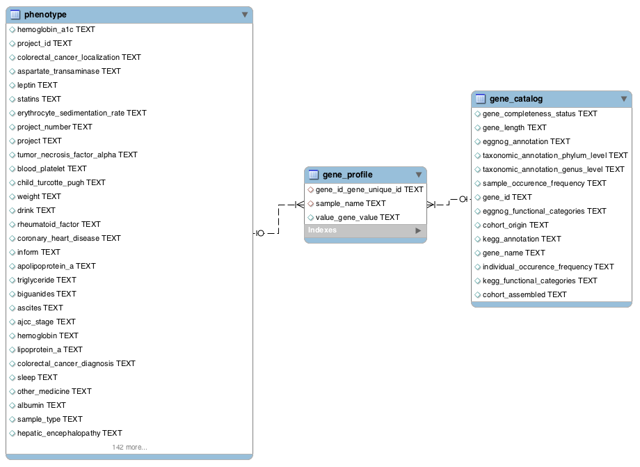

设计模式¶
数据库模式¶
HMD主要存储了样本表型、肠道菌群基因信息以及每个个体的肠道菌群基因信息。实体关系图如下：

数据模式¶
phenotype
格式如下：
1 | {"smoking":{"level":"D5","remark":"","example":"1, 2 ,2.5","allow":["0","99"],"abbr":"","index4sort":"是","index4query":"是","unit":"cigarette/day","type":"小数，小数点后1位","class":["Basic Information"],"desc":"吸烟频率"},"diuretics":{"class":["Basic Information"],"unit":"NA","type":"字符串","desc":"是否服用利尿剂","index4sort":"是","abbr":"","allow":"NA","index4query":"是","level":"D5","remark":"Y 服用但不知道具体名称；N 不服用； - 未知是否服用；detail 具体药名","example":"Y, N, -, (detail)"},"total_bilirubin":{"index4query":"是","index4sort":"是","abbr":"TBIL , TB","allow":["0","9999"],"desc":"总胆红素","class":["CHD，Liver cirrhosis"],"unit":"umol/L","type":"小数，小数点后1位","remark":"","example":"13.7","level":"D5"},"hypertension":{"remark":"0:无高血压； 1:1级高血压；2:2级高血压； 3:3级高血压","example":"0,1,2,3","level":"D5","index4query":"是","index4sort":"是","abbr":"HNT, HT","allow":"NA","desc":"是否有高血压","class":["Basic Information"],"unit":"NA","type":"整数"},"absolute_basophil":{"level":"D5","remark":"","example":"0.01, 0.08","allow":["0","9"],"abbr":"BASO#","index4sort":"是","index4query":"是","type":"小数，小数点后2位","unit":"10^9/L","class":["Basic Information"],"desc":"嗜碱性粒细胞绝对值"},"diet":{"class":["Basic Information"],"type":"字符串","unit":"NA","desc":"饮食习惯","index4sort":"是","abbr":"","allow":"NA","index4query":"是","level":"D5","example":"omnivore， vegetarian， vegan","remark":""},"fecal_sampling_before_or_after_colonoscopy":{"index4query":"是","abbr":"","index4sort":"是","allow":"NA","desc":"结肠镜检查之前或之后的粪便样本","class":["CRC"],"type":"字符串","unit":"NA","example":"before, after","remark":"","level":"D5"},"rheumatoid_factor":{"level":"D5","remark":"","example":"99.2","type":"小数，小数点后一位","unit":"U/ml","class":["RA"],"desc":"类风湿因子","allow":["0","9999"],"index4sort":"是","abbr":"RF","index4query":"是"},"fibroblast_growth_factor_19":{"desc":"成纤维细胞生长因子-19","type":"小数，小数点后2位","unit":"pg/ml","class":["DM"],"index4query":"是","allow":["0","999"],"index4sort":"是","abbr":"FGF-19","remark":"","example":"255.56","level":"D5"},"ddp_4_inhibitors":{"remark":"Y 服用但不知道具体名称；N 不服用； - 未知是否服用；detail 具体药名","example":"Y, N, -, (detail)","level":"D5","index4query":"是","allow":"NA","index4sort":"是","abbr":"","desc":"是否服用DDP-4抑制剂","unit":"NA","type":"字符串","class":["Basic Information"]},"systolic_blood_pressure":{"level":"D5","example":"120","remark":"","class":["Basic Information"],"type":"整数","unit":"mmHg","desc":"收缩压","abbr":"SBP","index4sort":"是","allow":["0","299"],"index4query":"是"},"gamma_glutamyl_transferase":{"type":"整数","unit":"(U/L)","class":["CRC","MD"],"desc":"γ-谷氨酰转移酶","allow":["0","199"],"abbr":"GGT， γ-GT","index4sort":"是","index4query":"是","level":"D5","example":"30","remark":""},"ascites":{"index4query":"是","index4sort":"是","abbr":"","allow":"NA","desc":"腹水","class":["Liver cirrhosis"],"type":"字符串","unit":"NA","example":"Mild, Absent","remark":"","level":"D5"},"bile_acid_sequestrants":{"unit":"NA","type":"字符串","class":["Basic Information"],"desc":"是否服用胆酸螯合剂","allow":"NA","abbr":"","index4sort":"是","index4query":"是","level":"D5","example":"Y, N, -, (detail)","remark":"Y 服用但不知道具体名称；N 不服用； - 未知是否服用；detail 具体药名"},"absolute_eosinophil":{"index4sort":"是","abbr":"EOS#","allow":["0","9"],"index4query":"是","class":["Basic Information"],"unit":"10^9/L","type":"小数，小数点后2位","desc":"嗜酸性粒细胞绝对值","level":"D5","remark":"","example":"0.04, 0.99"},"mean_corpuscular_volume":{"remark":"","example":"86.0, 106.5","level":"D5","index4query":"是","index4sort":"是","abbr":"MCV","allow":["0","999"],"desc":"平均红细胞体积","class":["Basic Information"],"unit":"fL","type":"小数，小数点后1位"},"hydroxybutyrate_dehydrogenase":{"type":"整数","unit":"U/L","class":["CHD"],"desc":"羟丁酸脱氢酶","allow":["0","9999"],"abbr":"HBDH","index4sort":"是","index4query":"是","level":"D5","example":"118","remark":""},"duration_between_colonoscopy_and_fecal_sample_collection":{"class":["CRC"],"unit":"NA","type":"小数, 小数点后2位","desc":"结肠镜检查与粪便样本采集间隔时间","abbr":"","index4sort":"是","allow":["-199.99","199.99"],"index4query":"是","level":"D5","remark":"","example":"60.32"},"anti–citrullinated_protein_antibody":{"class":["RA"],"type":"小数，小数点后2位","unit":"U/ml","desc":"抗环瓜氨酸肽抗体","index4sort":"是","abbr":"Anti-CCP","allow":["0","99999"],"index4query":"是","level":"D5","remark":"","example":"3200"},"colorectal_cancer_localization":{"index4query":"是","allow":"NA","abbr":"","index4sort":"是","desc":"结肠病变部位","type":"整数","unit":"NA","class":["CRC"],"example":"left, right, rectum","remark":"","level":"D5"},"inflammatory_bowel_disease":{"unit":"NA","type":"整数","class":["Basic Information"],"desc":"是否患有炎症性肠病","allow":["0","2"],"index4sort":"是","abbr":"IBD","index4query":"是","level":"D5","remark":"","example":"0，1， 2"},"diagnose_of_diabetes_years":{"example":"0.5, 12","remark":"","level":"D5","desc":"糖尿病诊断年限","class":["DM"],"type":"小数，小数点后1位","unit":"Year","index4query":"是","index4sort":"是","abbr":"","allow":["0","150"]},"homeostatic_model_assessment_insulin_resistance_index":{"allow":["0","99.99"],"abbr":"HOMA-IR index","index4sort":"是","index4query":"是","type":"小数，小数点后2位","unit":"NA","class":["CRC"],"desc":"稳态胰岛素评价指数","level":"D5","remark":"","example":"2.44"},"blood_platelet":{"level":"D5","remark":"","example":"304","allow":["0","9999"],"abbr":"PLT","index4sort":"是","index4query":"是","unit":"x10^9/L","type":"整数","class":["RA"],"desc":"血小板计数"},"high_density_lipoprotein":{"desc":"高密度脂蛋白","unit":"mmol/L","type":"小数，小数点后2位","class":["Basic Information"],"index4query":"是","allow":["0","99.99"],"abbr":"HDL","index4sort":"是","example":"1.05","remark":"","level":"D5"},"absolute_neutrophil":{"index4query":"是","allow":["0","99"],"index4sort":"是","abbr":"NEU#","desc":"中性粒细胞绝对值","unit":"10^9/L","type":"小数，小数点后2位","class":["Basic Information"],"remark":"","example":"0.99, 4.13","level":"D5"},"lipoprotein_a":{"index4query":"是","abbr":"LPa","index4sort":"是","allow":["0","9999.99"],"desc":"脂蛋白a","class":["CHD"],"type":"小数，小数点后2位","unit":"mmol/L","remark":"","example":"267.08","level":"D5"},"inform":{"example":"Y, N","remark":"","level":"D5","index4query":"是","allow":["Y","N"],"abbr":"","index4sort":"是","desc":"是否有知情同意书","unit":"NA","type":"是或否","class":["Basic Information"]},"insulin":{"example":"Y, N, -, 1, 2, 3, 4, 5, (detail)","remark":"Y 服用但不知道具体名称；N 不服用； - 未知是否服用；1 长效胰岛素；2 中效胰岛素；3 短效胰岛素；4 超短效胰岛素；5 预混胰岛素；detail 具体药名；","level":"D5","index4query":"是","abbr":"","index4sort":"是","allow":"NA","desc":"是否服用胰岛素","class":["Basic Information"],"type":"字符串","unit":"NA"},"low_density_lipoprotein":{"abbr":"LDL","index4sort":"是","allow":["0","99.99"],"index4query":"是","class":["Basic Information"],"type":"小数，小数点后2位","unit":"mmol/L","desc":"低密度脂蛋白","level":"D5","example":"3.26","remark":""},"eosinophil_percentage":{"type":"小数，小数点后2位","unit":"%","class":["Basic Information"],"desc":"嗜酸性粒细胞百分比","allow":["0","100"],"index4sort":"是","abbr":"EOS%","index4query":"是","level":"D5","remark":"","example":"0.60, 16.01"},"liver_cirrhosis_other_causes_related":{"level":"D5","example":"Y, N， schistosoma related， Hepatitis E virus related","remark":"","type":"字符串","unit":"NA","class":["Liver cirrhosis"],"desc":"肝硬化的其他相关病因","allow":"NA","index4sort":"是","abbr":"LC-other","index4query":"是"},"smoker":{"index4query":"是","abbr":"","index4sort":"是","allow":"NA","desc":"吸烟史","class":["Basic Information"],"type":"字符串","unit":"NA","remark":"","example":"non-somker, ex-smoker, NA","level":"D5"},"ningestedglinide":{"remark":"Y 服用但不知道具体名称；N 不服用； - 未知是否服用；detail 具体药名","example":"Y, N, -, (detail)","level":"D5","desc":"是否服用格列奈类药物","class":["Basic Information"],"unit":"NA","type":"字符串","index4query":"是","abbr":"","index4sort":"是","allow":"NA"},"hemoglobin_a1c":{"level":"D5","example":"44","remark":"","allow":["0","100"],"index4sort":"是","abbr":"HbA1c","index4query":"是","unit":"mmol/mol","type":"小数，小数点后1位","class":["DM","CHD","CRC"],"desc":"糖化血红蛋白水平"},"hip":{"example":"110","remark":"","level":"D5","index4query":"是","allow":["0","999"],"abbr":"","index4sort":"是","desc":"臀围","type":"整数","unit":"cm","class":["Basic Information"]},"leison_specific_location":{"remark":"中文释义可能不准确","example":"L7","level":"D5","index4query":"是","index4sort":"是","abbr":"","allow":"NA","desc":"具体病变部位","class":["CRC"],"type":"字符串","unit":"NA"},"tumor_necrosis_factor_alpha":{"allow":["0","19.99"],"abbr":"TNFα","index4sort":"是","index4query":"是","unit":"ng/L","type":"小数，小数点后2位","class":["DM"],"desc":"肿瘤坏死因子α","level":"D5","example":"2.27","remark":""},"cholesterol_absorption_inhibitor":{"index4sort":"是","abbr":"","allow":"NA","index4query":"是","class":["Basic Information"],"unit":"NA","type":"字符串","desc":"是否服用胆固醇吸收抑制剂","level":"D5","example":"Y, N, -, (detail)","remark":"Y 服用但不知道具体名称；N 不服用； - 未知是否服用；detail 具体药名"},"alkaline_phosphatase":{"desc":"碱性磷酸酶","type":"整数","unit":"U/L","class":["DM"],"index4query":"是","allow":["0","999"],"index4sort":"是","abbr":"ALP","example":"62, 122","remark":"","level":"D5"},"fasting_insulin":{"allow":["0","50"],"abbr":"","index4sort":"是","index4query":"是","unit":"mU/L","type":"小数，小数点后1位","class":["DM，CRC"],"desc":"空腹血胰岛素","level":"D5","remark":"","example":"14.1"},"hemoglobin":{"remark":"","example":"122, 152","level":"D5","index4query":"是","abbr":"HGB, Hb","index4sort":"是","allow":["0","999"],"desc":"血红蛋白浓度","class":["Basic Information"],"type":"整数","unit":"g/L"},"leison_location":{"level":"D5","example":"2","remark":"中文释义可能不准确","allow":["0","99"],"abbr":"","index4sort":"是","index4query":"是","type":"整数","unit":"NA","class":["CRC"],"desc":"病变部位数目"},"blood_urea_nitrogen":{"abbr":"BUN","index4sort":"是","allow":["0","99.9"],"index4query":"是","class":["CHD"],"unit":"mmol/L","type":"小数，小数点后1位","desc":"血尿素氮","level":"D5","remark":"","example":"5.2"},"project":{"remark":"可限制在64个字符以内","example":"RA metagenomics study","level":"D5","desc":"来源项目名称","unit":"NA","type":"字符串","class":["Basic Information"],"index4query":"是","allow":"NA","index4sort":"是","abbr":""},"diabetes_mellitus":{"allow":"NA","index4sort":"是","abbr":"DM","index4query":"是","type":"整数","unit":"NA","class":["Basic Information"],"desc":"是否患有糖尿病","level":"D5","remark":"0：否；1:糖尿病前期，血糖偏高；2：2型糖尿病；3:1型糖尿病","example":"0, 1，,2， 3"},"other_diseases":{"abbr":"","index4sort":"是","allow":"NA","index4query":"是","class":["Basic Information"],"unit":"NA","type":"字符串","desc":"是否患有其他疾病","level":"D5","remark":"detail包括列出的其他疾病名称","example":"0， 1，(detail)"},"colorectal_cancer":{"index4query":"是","abbr":"CRC","index4sort":"是","allow":["0","2"],"desc":"是否患有结直肠癌","class":["Basic Information"],"unit":"NA","type":"整数","remark":"","example":"0，1， 2","level":"D5"},"direct_bilirubin":{"class":["CHD"],"type":"小数，小数点后2位","unit":"umol/L","desc":"直接胆红素","abbr":"DBIL","index4sort":"是","allow":["0","99.9"],"index4query":"是","level":"D5","example":"2.63","remark":""},"tnm_stage":{"level":"D5","example":"T3N1M1，T4N1M0","remark":"","class":["CRC"],"unit":"NA","type":"字符串","desc":"结直肠癌TNM分类","abbr":"","index4sort":"是","allow":"NA","index4query":"是"},"packcd_cell_volume":{"level":"D5","remark":"","example":"36.0, 51.6","index4sort":"是","abbr":"PCV, HCT","allow":["0","100"],"index4query":"是","class":["Basic Information"],"type":"小数，小数点后1位","unit":"%","desc":"红细胞压积"},"metabolic_syndrome":{"example":"1 or 0","remark":"(1:yes, 1:no)","level":"D5","desc":"是否患有代谢综合征","class":["Basic Information"],"type":"整数","unit":"NA","index4query":"是","abbr":"MetS","index4sort":"是","allow":["0","1"]},"body_mass_index":{"level":"D5","remark":"","example":"23.8","class":["Basic Information"],"unit":"kg/m^2","type":"小数，小数点后1位","desc":"身高体重指数","index4sort":"是","abbr":"BMI","allow":["0","100"],"index4query":"是"},"age":{"index4query":"是","abbr":"","index4sort":"是","allow":["0","150"],"desc":"年龄","class":["Basic Information"],"type":"整数","unit":"NA","remark":"","example":"28","level":"D5"},"white_blood_cell_count":{"level":"D5","remark":"","example":"3.61, 11.65","index4sort":"是","abbr":"WBC","allow":["0","99"],"index4query":"是","class":["Basic Information"],"type":"小数，小数点后2位","unit":"10^9/L","desc":"白细胞数"},"immunoglobulin_g":{"level":"D5","example":"15.6","remark":"","index4sort":"是","abbr":"IgG","allow":["0","99.99"],"index4query":"是","class":["RA"],"type":"小数，小数点后2位","unit":"g/L","desc":"免疫球蛋白G"},"ajcc_stage":{"index4sort":"是","abbr":"","allow":"NA","index4query":"是","class":["CRC"],"unit":"NA","type":"字符串","desc":"结直肠癌AJCC分期","level":"D5","remark":"","example":"0, I, II, III, IV"},"three_vascular_lesions":{"type":"是否","unit":"NA","class":["CHD"],"desc":"是否有三支血管病变","allow":"NA","index4sort":"是","abbr":"","index4query":"是","level":"D5","remark":"","example":"Y, N"},"angiotensin_converting_enzyme_inhibitor":{"example":"Y, N, -, (detail)","remark":"Y 服用但不知道具体名称；N 不服用； - 未知是否服用；detail 具体药名","level":"D5","desc":"是否服用血管紧张素转换酶抑制剂","class":["Basic Information"],"unit":"NA","type":"字符串","index4query":"是","index4sort":"是","abbr":"ACEI","allow":"NA"},"hepatic_encephalopathy":{"level":"D5","remark":"","example":"Grade 1, -, None","class":["Liver cirrhosis"],"type":"字符串","unit":"NA","desc":"肝性脑病分期","abbr":"HE","index4sort":"是","allow":"NA","index4query":"是"},"user_id":{"index4sort":"是","abbr":"","allow":"NA","index4query":"是","class":["Basic Information"],"unit":"NA","type":"字符串","desc":"用户ID","level":"D5","remark":"","example":"P00001、P99999"},"uric_acid":{"level":"D5","example":"481","remark":"","index4sort":"是","abbr":"URIC","allow":["0","9999"],"index4query":"是","class":["CHD"],"type":"整数","unit":"umol/L","desc":"尿酸"},"escherichia_abundance":{"desc":"埃希氏菌属丰度","type":"小数，小数点后4位","unit":"NA","class":["CHD"],"index4query":"是","allow":["0","0.9999"],"index4sort":"是","abbr":"","example":"0.1673","remark":"","level":"D5"},"model_for_end_stage_liver_disease":{"desc":"终末期肝病模型","class":["Liver cirrhosis"],"type":"小数，小数点后1位","unit":"NA","index4query":"是","index4sort":"是","abbr":"MELD","allow":["-19.9","99.9"],"example":"5.4","remark":"","level":"D5"},"drink":{"class":["Basic Information"],"type":"整数","unit":"NA","desc":"饮酒情况","abbr":"","index4sort":"是","allow":["0","5"],"index4query":"是","level":"D5","example":"0, 1, 2, 3, 4，5","remark":"0-5 表示饮酒量逐渐增多"},"immunoglobulin_m":{"index4query":"是","abbr":"IgM","index4sort":"是","allow":["0","99.99"],"desc":"免疫球蛋白M","class":["RA"],"unit":"g/L","type":"小数，小数点后2位","remark":"","example":"2.85","level":"D5"},"hyperlipidemia":{"index4query":"是","allow":"NA","index4sort":"是","abbr":"","desc":"是否有高血脂症","type":"整数","unit":"NA","class":["Basic Information"],"remark":"0：无高血脂； 1：高胆固醇血症; 2: 高三酰甘油血症; 3:其他","example":"0,1,2,3，4, 5","level":"D5"},"albumin":{"allow":["0","199.9"],"index4sort":"是","abbr":"ALB","index4query":"是","type":"小数，小数点后1位","unit":"g/L","class":["Basic Information"],"desc":"血清白蛋白","level":"D5","remark":"","example":"28.6"},"residence":{"level":"D5","remark":"","example":"China, France， Germany","unit":"NA","type":"字符串","class":["Basic Information"],"desc":"居住国家","allow":"NA","index4sort":"是","abbr":"","index4query":"是"},"rheumatoid_arthritis_treatment":{"abbr":"RA-treatment","index4sort":"是","allow":"NA","index4query":"是","class":["RA"],"type":"字符串","unit":"NA","desc":"类风关项目-治疗情况","level":"D5","example":"MTX, T2, MTX+T2","remark":""},"weight":{"level":"D5","example":"60.5","remark":"","class":["Basic Information"],"type":"小数，小数点后1位","unit":"Kg","desc":"体重","abbr":"","index4sort":"是","allow":["0","800"],"index4query":"是"},"liver_cirrhosis_hbv_related":{"level":"D5","example":"Y, N","remark":"","unit":"NA","type":"是，否","class":["Liver cirrhosis"],"desc":"肝硬化是否与HBV感染相关","allow":"NA","index4sort":"是","abbr":"LC-HBV","index4query":"是"},"β_blocker":{"desc":"是否服用β受体阻滞剂","unit":"NA","type":"字符串","class":["Basic Information"],"index4query":"是","allow":"NA","index4sort":"是","abbr":"","remark":"Y 服用但不知道具体名称；N 不服用； - 未知是否服用；detail 具体药名","example":"Y, N, -, (detail)","level":"D5"},"oral_anti_diabetic_medication":{"level":"D5","example":"Met, Sulph,-","remark":"(-, no medication; Met, metformin; Sulph, sulphonylurea)","unit":"NA","type":"字符串","class":["DM"],"desc":"口服抗糖尿病药物使用情况","allow":"NA","abbr":"","index4sort":"是","index4query":"是"},"rheumatoid_arthritis_general_health":{"level":"D5","remark":"","example":"95","abbr":"RA-GH","index4sort":"是","allow":["0","100"],"index4query":"是","class":["RA"],"type":"整数","unit":"NA","desc":"类风关项目-一般健康状况评分"},"platform":{"index4query":"是","index4sort":"是","abbr":"","allow":"NA","desc":"测序平台","class":["Basic Information"],"type":"字符串","unit":"NA","example":"Zebra, Hiseq, Proton","remark":"","level":"D5"},"high_sensitivity_c_reactive_protein":{"example":"7.04","remark":"","level":"D5","desc":"超敏C反应蛋白","unit":"mg/L","type":"小数，小数点后2位","class":["DM"],"index4query":"是","allow":["0","99.99"],"abbr":"hsCRP","index4sort":"是"},"coronary_heart_disease":{"example":"0，1","remark":"","level":"D5","desc":"是否患有冠心病","class":["Basic Information"],"type":"整数","unit":"NA","index4query":"是","abbr":"CHD","index4sort":"是","allow":["0","1"]},"glucagon_like_peptide_1":{"type":"小数，小数点后1位","unit":"pmol/L","class":["DM"],"desc":"胰高血糖素样肽-1","allow":["0","20"],"abbr":"GLP-1","index4sort":"是","index4query":"是","level":"D5","example":"1.7","remark":""},"liver_cirrhosis":{"example":"0, 1, 2","remark":"0：无肝硬化； 1：肝炎； 2：肝硬化","level":"D5","desc":"是否患有肝硬化","class":["Basic Information"],"type":"整数","unit":"NA","index4query":"是","index4sort":"是","abbr":"","allow":["0","2"]},"carotid_atherosclerosis":{"allow":"NA","abbr":"","index4sort":"是","index4query":"是","type":"是否","unit":"NA","class":["CHD"],"desc":"是否有颈动脉粥样硬化","level":"D5","remark":"","example":"Y, N"},"apolipoprotein_b":{"desc":"载脂蛋白B类","type":"小数，小数点后2位","unit":"mmol/L","class":["CHD"],"index4query":"是","allow":["0","19.99"],"index4sort":"是","abbr":"APOB","remark":"","example":"0.83","level":"D5"},"biguanides":{"level":"D5","example":"Y, N, -, (detail)","remark":"Y 服用但不知道具体名称；N 不服用； - 未知是否服用；detail 具体药名","class":["Basic Information"],"type":"字符串","unit":"NA","desc":"是否服用双胍类药物","index4sort":"是","abbr":"","allow":"NA","index4query":"是"},"colorectal_cancer_stage":{"desc":"结直肠癌项目-患病状态","type":"字符串","unit":"NA","class":["CRC"],"index4query":"是","allow":"NA","index4sort":"是","abbr":"CRC-Stage","example":"control, advanced adenoma, carcinoma, stage1, stage2, CRC","remark":"","level":"D5"},"erythrocyte_sedimentation_rate":{"level":"D5","remark":"","example":"17","class":["RA"],"unit":"mm/h","type":"整数","desc":"红细胞沉降率","index4sort":"是","abbr":"ESR","allow":["0","999"],"index4query":"是"},"fatty_liver":{"level":"D5","example":"0,1","remark":"(1:yes, 0:no)","abbr":"","index4sort":"是","allow":["0","1"],"index4query":"是","class":["Basic Information"],"type":"整数","unit":"NA","desc":"是否有脂肪肝"},"coronary_heart_disease_diagnose":{"remark":"","example":"Coronary atherosclerotic heart disease","level":"D5","desc":"冠心病项目-诊断结果","class":["CHD"],"type":"字符串","unit":"NA","index4query":"是","abbr":"CHD-Diagnose","index4sort":"是","allow":"NA"},"raw_sequencing_data":{"class":["Basic Information"],"unit":"NA","type":"字符串","desc":"下机数据","abbr":"","index4sort":"是","allow":"NA","index4query":"是","level":"D5","remark":"下机数据存储路径","example":"/lfs1/zebra03/F16HQSB1SY2426_Temp/CL300003116_L02/CL300003116_L02_14.fq.gz"},"waist":{"level":"D5","remark":"","example":"89","class":["Basic Information"],"type":"整数","unit":"cm","desc":"腰围","abbr":"","index4sort":"是","allow":["0","999"],"index4query":"是"},"creatinine":{"level":"D5","example":"45.1","remark":"","class":["Basic Information"],"type":"小数，小数点后1位","unit":"µmol/L","desc":"肌酸酐（肌酐）","index4sort":"是","abbr":"Cr， Crea","allow":["0","200"],"index4query":"是"},"c_reaction_protein":{"index4query":"是","index4sort":"是","abbr":"CRP","allow":["0","999.99"],"desc":"C反应蛋白","class":["RA，CRC","CHD"],"unit":"mg/L","type":"小数，小数点后2位","remark":"","example":"9.42","level":"D5"},"disease_activity":{"index4sort":"是","abbr":"","allow":"NA","index4query":"是","class":["RA"],"unit":"NA","type":"字符串","desc":"疾病活动度","level":"D5","example":"high, moderate","remark":""},"prothrombin_time":{"index4query":"是","allow":["0","199.9"],"abbr":"PT","index4sort":"是","desc":"凝血酶原时间","type":"小数，小数点后1位","unit":"S","class":["Liver cirrhosis"],"remark":"","example":"12.8， -","level":"D5"},"rheumatoid_arthritis_health_assessment_questionnaire":{"index4sort":"是","abbr":"RA-HAQ","allow":["0","10"],"index4query":"是","class":["RA"],"type":"小数，小数点后3位","unit":"NA","desc":"类风关项目-健康评估问卷","level":"D5","example":"2.375","remark":""},"colorectal_cancer_diagnosis":{"level":"D5","example":"Normal, Small adenoma, Large adenoma, Caner","remark":"","type":"字符串","unit":"NA","class":["CRC"],"desc":"结直肠癌项目-诊断结果","allow":"NA","index4sort":"是","abbr":"CRC Diagnosis","index4query":"是"},"ferritin":{"abbr":"","index4sort":"是","allow":["0","9999.9"],"index4query":"是","class":["CRC"],"unit":"(ng/mL)","type":"小数，小数点后1位","desc":"铁蛋白含量","level":"D5","remark":"","example":"168.8"},"hrobiotic_or_yogurt":{"level":"D5","example":"0, 1, 2, 3, 4，5","remark":"0-5 表示食用量逐渐增多","allow":["0","5"],"abbr":"","index4sort":"是","index4query":"是","type":"整数","unit":"NA","class":["Basic Information"],"desc":"益生元/酸奶食用情况"},"c_luster_of_d_ifferentiation_163":{"unit":"ng/ml","type":"小数，小数点后2位","class":["DM"],"desc":"分化抗原163蛋白","allow":["0","9999.99"],"index4sort":"是","abbr":"CD163","index4query":"是","level":"D5","remark":"","example":"817.84"},"colorectal_cancer_histology":{"type":"整数","unit":"NA","class":["CRC"],"desc":"结直肠癌项目-组织学信息","allow":"NA","abbr":"CRC-histology","index4sort":"是","index4query":"是","level":"D5","remark":"","example":"carcinoma in situ, adenocarcinoma"},"triglyceride":{"level":"D5","remark":"","example":"0.88","allow":["0","99.99"],"abbr":"TG","index4sort":"是","index4query":"是","unit":"mmol/L","type":"小数，小数点后2位","class":["Basic Information"],"desc":"甘油三酯"},"antibiotic":{"remark":"Y 服用但不知道具体名称；N 不服用； - 未知是否服用；detail 具体药名","example":"Y, N, -, (detail)","level":"D5","desc":"是否服用抗生素","class":["Basic Information"],"unit":"NA","type":"字符串","index4query":"是","abbr":"","index4sort":"是","allow":"NA"},"red_blood_cell_count":{"level":"D5","remark":"","example":"4.58, 5.08","type":"小数，小数点后2位","unit":"10^9/L","class":["Basic Information"],"desc":"红细胞数","allow":["0","99"],"index4sort":"是","abbr":"RBC","index4query":"是"},"calcium_channel_blockers":{"allow":"NA","abbr":"","index4sort":"是","index4query":"是","unit":"NA","type":"字符串","class":["Basic Information"],"desc":"是否服用钙拮抗剂","level":"D5","remark":"Y 服用但不知道具体名称；N 不服用； - 未知是否服用；detail 具体药名","example":"Y, N, -, (detail)"},"race":{"level":"D5","example":"Han, Caucasian","remark":"","allow":"NA","index4sort":"是","abbr":"","index4query":"是","type":"字符串","unit":"NA","class":["Basic Information"],"desc":"民族"},"leptin":{"level":"D5","example":"23.2","remark":"","allow":["0","199"],"abbr":"","index4sort":"是","index4query":"是","unit":"µg/L","type":"小数，小数点后2位","class":["DM"],"desc":"瘦素"},"anti_keratin_antibody":{"index4query":"是","allow":"NA","abbr":"Anti-AKA","index4sort":"是","desc":"抗角蛋白抗体","unit":"NA","type":"字符串","class":["RA"],"remark":"","example":"+， -","level":"D5"},"clinical_disease_activity_index":{"example":"23.5","remark":"","level":"D5","desc":"临床疾病活动度指数","unit":"NA","type":"小数，小数点后一位","class":["RA"],"index4query":"是","allow":["0","100"],"index4sort":"是","abbr":"CDAI"},"basophil_percentage":{"remark":"","example":"0.20, 1.11","level":"D5","index4query":"是","index4sort":"是","abbr":"BASO%","allow":["0","100"],"desc":"嗜碱性粒细胞百分比","class":["Basic Information"],"unit":"%","type":"小数，小数点后2位"},"rheumatoid_arthritis_change_of_prescription":{"desc":"类风关项目-处方更改情况","class":["RA"],"unit":"NA","type":"字符串","index4query":"是","abbr":"","index4sort":"是","allow":"NA","remark":"","example":"Taking MTX+pred+etanercept for 5 months，then taking MTX+HCQ+etanercept","level":"D5"},"total_cholesterol":{"example":"4.47","remark":"","level":"D5","desc":"总胆固醇","unit":"mmol/L","type":"小数，小数点后2位","class":["Basic Information"],"index4query":"是","allow":["0","99.99"],"index4sort":"是","abbr":"TC， TCHO"},"nicotinic_acids":{"level":"D5","example":"Y, N, -, (detail)","remark":"Y 服用但不知道具体名称；N 不服用； - 未知是否服用；detail 具体药名","class":["Basic Information"],"type":"字符串","unit":"NA","desc":"是否服用烟酸类药物","abbr":"","index4sort":"是","allow":"NA","index4query":"是"},"emotion":{"example":"0, 1, 2, 3, 4","remark":"此项为多选！0-no; 1-pressure; 2-anxiety; 3-overwork; 4-nervous","level":"D5","index4query":"是","index4sort":"是","abbr":"","allow":"NA","desc":"情绪状况","class":["Basic Information"],"type":"字符串","unit":"NA"},"apolipoprotein_a":{"remark":"","example":"1.22","level":"D5","desc":"载脂蛋白A类","class":["CHD"],"type":"小数，小数点后2位","unit":"mmol/L","index4query":"是","abbr":"APOA","index4sort":"是","allow":["0","999.99"]},"years_of_residence":{"level":"D5","remark":"","example":"0, 1， 34， 56，","type":"整数","unit":"NA","class":["Basic Information"],"desc":"居住时间","allow":["0","199"],"index4sort":"是","abbr":"","index4query":"是"},"defecation":{"level":"D5","remark":"0-排便顺畅正常； 1-糊便装，粪便难以成形，腹泻；2- 粪便干硬，排便不畅","example":"0, 1, 2, 3, 4，5","class":["Basic Information"],"unit":"NA","type":"整数","desc":"排便情况","index4sort":"是","abbr":"","allow":["0","5"],"index4query":"是"},"sample_type":{"level":"D5","example":"Stool, Dental, Saliva, Blood, Urine","remark":"","index4sort":"是","abbr":"","allow":"NA","index4query":"是","class":["Basic Information"],"unit":"NA","type":"字符串","desc":"样品类型（粪便、牙菌斑、唾液、血液、尿液等）"},"rheumatoid_arthritis":{"allow":["0","1"],"abbr":"RA","index4sort":"是","index4query":"是","type":"整数","unit":"NA","class":["Basic Information"],"desc":"是否有类风湿关节炎","level":"D5","example":"0,1","remark":"(1:yes, 0:no)"},"absolute_lymphocyte":{"level":"D5","example":"0.87, 3.93","remark":"","class":["Basic Information"],"type":"小数，小数点后2位","unit":"10^9/L","desc":"淋巴细胞绝对值","abbr":"LYMPH#","index4sort":"是","allow":["0","100"],"index4query":"是"},"unstable_angina_pectoris":{"desc":"是否有不稳定型心绞痛","unit":"NA","type":"是否","class":["CHD"],"index4query":"是","allow":"NA","index4sort":"是","abbr":"","remark":"","example":"Y, N","level":"D5"},"immunoglobulin_a":{"example":"3.26","remark":"","level":"D5","desc":"免疫球蛋白A","unit":"g/L","type":"小数，小数点后2位","class":["RA"],"index4query":"是","allow":["0","99.99"],"abbr":"IgA","index4sort":"是"},"glycerini_enema_kai_sai_lu":{"index4query":"是","allow":"NA","index4sort":"是","abbr":"KSL","desc":"是否使用开塞露","type":"是否","unit":"NA","class":["Basic Information"],"example":"Y, N","remark":"","level":"D5"},"_estimated_glomerular_filtration_rate":{"level":"D5","example":"95.03","remark":"","class":["CRC"],"unit":"mL/min","type":"小数, 小数点后2位","desc":"肾小球滤过率","index4sort":"是","abbr":"eGFR","allow":["0","200"],"index4query":"是"},"gender":{"level":"D5","remark":"(1:male, 2:female)","example":"1, 2","class":["Basic Information"],"type":"字符串","unit":"NA","desc":"性别","abbr":"","index4sort":"是","allow":["1","2"],"index4query":"是"},"fasting_blood_glucose":{"class":["Basic Information"],"unit":"mmol/L","type":"小数，小数点后2位","desc":"空腹血糖","index4sort":"是","abbr":"FBG","allow":["0","50"],"index4query":"是","level":"D5","example":"5.99","remark":""},"mean_corpuscular_hemoglobin":{"desc":"平均红细胞血红蛋白含量","type":"小数，小数点后1位","unit":"pg","class":["Basic Information"],"index4query":"是","allow":["0","99"],"abbr":"MCH","index4sort":"是","remark":"","example":"28.1, 30.8","level":"D5"},"child_turcotte_pugh":{"remark":"","example":"5.0, 7.0, 9.0, -","level":"D5","index4query":"是","index4sort":"是","abbr":"CTP","allow":["0","19.0"],"desc":"肝功能分级","class":["Liver cirrhosis"],"type":"小数，小数点后1位","unit":"NA"},"lymphocyte_percentage":{"example":"8.04, 55.10","remark":"","level":"D5","desc":"淋巴细胞百分比","class":["Basic Information"],"type":"小数，小数点后2位","unit":"%","index4query":"是","index4sort":"是","abbr":"LYMPH%","allow":["0","100"]},"liver_cirrhosis_alcohol_related":{"abbr":"LC-Alcohol","index4sort":"是","allow":"NA","index4query":"是","class":["Liver cirrhosis"],"type":"是，否","unit":"NA","desc":"肝硬化是否与酒精相关","level":"D5","remark":"","example":"Y, N"},"alanine_aminotransferase":{"remark":"","example":"5, 16, 129","level":"D5","desc":"丙氨酸氨基转移酶（谷丙转氨酶）","unit":"U/L","type":"整数","class":["Basic Information"],"index4query":"是","allow":["0","199"],"abbr":"ALT，GPT","index4sort":"是"},"duration_of_frozen_storage_of_fecal_samples":{"desc":"粪便样本冷冻存储时长","class":["Basic Information"],"unit":"NA","type":"小数, 小数点后2位","index4query":"是","abbr":"","index4sort":"是","allow":["0","2999.99"],"remark":"","example":"49.73","level":"D5"},"glucosidase_inhibitor":{"example":"Y, N, -, (detail)","remark":"Y 服用但不知道具体名称；N 不服用； - 未知是否服用；detail 具体药名","level":"D5","desc":"是否服用α-糖苷酶抑制剂","unit":"NA","type":"字符串","class":["Basic Information"],"index4query":"是","allow":"NA","abbr":"","index4sort":"是"},"waist_hip_ratio":{"level":"D5","example":"0.88","remark":"","allow":["0","19.9"],"abbr":"WHR","index4sort":"是","index4query":"是","type":"小数，小数点后2位","unit":"NA","class":["Basic Information"],"desc":"腰臀比"},"irritable_bowel_syndrome":{"level":"D5","remark":"","example":"0，1","allow":["0","1"],"index4sort":"是","abbr":"IBS","index4query":"是","type":"整数","unit":"NA","class":["Basic Information"],"desc":"是否患有肠易激综合征"},"height":{"level":"D5","example":"178.4","remark":"","allow":["0","250"],"abbr":"","index4sort":"是","index4query":"是","unit":"cm","type":"小数，小数点后1位","class":["Basic Information"],"desc":"身高"},"physical_activities":{"remark":"0-5 表示运动量逐渐增多","example":"0, 1, 2, 3, 4，5","level":"D5","index4query":"是","index4sort":"是","abbr":"","allow":["0","5"],"desc":"运动情况","class":["Basic Information"],"type":"整数","unit":"NA"},"anti_perinuclear_factor":{"allow":"NA","abbr":"Anti-APF","index4sort":"是","index4query":"是","unit":"NA","type":"字符串","class":["RA"],"desc":"抗核周因子抗体","level":"D5","remark":"","example":"+， -"},"c_peptide":{"desc":"C肽","class":["DM"],"type":"小数，小数点后2位","unit":"nmol/L","index4query":"是","abbr":"","index4sort":"是","allow":["0","19.99"],"example":"0.72","remark":"","level":"D5"},"faecal_occult_blood_test":{"unit":"NA","type":"字符串","class":["CRC"],"desc":"粪便潜血试验","allow":"NA","abbr":"FOBT","index4sort":"是","index4query":"是","level":"D5","example":"Negative, Positive","remark":""},"neutrophil_percentage":{"remark":"","example":"30.80, 86.23","level":"D5","index4query":"是","allow":["0","100"],"abbr":"NEU%","index4sort":"是","desc":"中性粒细胞百分比","unit":"%","type":"小数，小数点后2位","class":["Basic Information"]},"health_products":{"level":"D5","remark":"","example":"0， 1，(detail)","abbr":"","index4sort":"是","allow":"NA","index4query":"是","class":["Basic Information"],"type":"字符串","unit":"NA","desc":"是否服用保健品"},"urinary_microalbumin":{"class":["DM"],"unit":"mg/L","type":"小数，小数点后1位","desc":"尿微量白蛋白","abbr":"mAlb","index4sort":"是","allow":["0","100"],"index4query":"是","level":"D5","example":"2.7, 48.8","remark":""},"wif_1_gene_methylation_test":{"example":"Negative, Positive","remark":"","level":"D5","desc":"WIF-1基因甲基化试验","class":["CRC"],"unit":"NA","type":"字符串","index4query":"是","abbr":"","index4sort":"是","allow":"NA"},"creatine_kinase_mb":{"example":"4.8","remark":"","level":"D5","index4query":"是","allow":["0","999.9"],"abbr":"CKMB","index4sort":"是","desc":"肌酸激酶同工酶","unit":"mmol/L","type":"小数，小数点后1位","class":["CHD"]},"project_id":{"example":"PRJEB4609, 154, ERP006030","remark":"可用NCBI的SRA数据库或MG-RAST数据库或ENA数据库的access ID","level":"D5","desc":"在其他数据库中的来源项目ID","unit":"NA","type":"字符串","class":["Basic Information"],"index4query":"是","allow":"NA","abbr":"","index4sort":"是"},"glutamic_acid_decarboxylase_autoantibodies":{"level":"D5","example":"6.36, 134.27","remark":"","abbr":"GAD-Ab","index4sort":"是","allow":["0","999.9"],"index4query":"是","class":["DM"],"type":"小数，小数点后1位","unit":"U/mL","desc":"谷氨酸脱羧酶抗体"},"date":{"level":"D5","example":"2015-12-29","remark":"","class":["Basic Information"],"unit":"NA","type":"日期","desc":"采样时间","abbr":"","index4sort":"是","allow":"NA","index4query":"是"},"aspartate_transaminase":{"index4query":"是","index4sort":"是","abbr":"AST，GOT","allow":["0","199"],"desc":"天门冬氨酸氨基转移酶","class":["CRC","CHD"],"unit":"(U/L)","type":"整数","example":"19","remark":"","level":"D5"},"diastolic_blood_pressure":{"class":["Basic Information"],"unit":"mmHg","type":"整数","desc":"舒张压","abbr":"DBP","index4sort":"是","allow":["0","199"],"index4query":"是","level":"D5","example":"80","remark":""},"2_hours_oral_glucose_tolerance_test":{"level":"D5","remark":"","example":"5.99","type":"小数，小数点后2位","unit":"mmol/L","class":["DM"],"desc":"2小时糖耐血糖","allow":["0","50"],"index4sort":"是","abbr":"2hOGTT","index4query":"是"},"other_medicine":{"level":"D5","remark":"备注具体药名","example":"(detail)","unit":"NA","type":"字符串","class":["Basic Information"],"desc":"服用的其他药物","allow":"NA","abbr":"","index4sort":"是","index4query":"是"},"disease_activity_score":{"level":"D5","remark":"","example":"3.988","abbr":"DAS28","index4sort":"是","allow":["0","10"],"index4query":"是","class":["RA"],"unit":"NA","type":"小数，小数点后3位","desc":"疾病活动度评分"},"monocytes_percentage":{"level":"D5","example":"5.10, 10.11","remark":"","allow":["0","100"],"index4sort":"是","abbr":"MONO%","index4query":"是","unit":"%","type":"小数，小数点后2位","class":["Basic Information"],"desc":"单核细胞百分比"},"absolute_monocytes":{"remark":"","example":"0.20, 0.60","level":"D5","desc":"单核细胞绝对值","class":["Basic Information"],"type":"小数，小数点后2位","unit":"10^9/L","index4query":"是","index4sort":"是","abbr":"MONO#","allow":["0","9"]},"creatine_kinase":{"remark":"","example":"79","level":"D5","index4query":"是","abbr":"CK","index4sort":"是","allow":["0","9999"],"desc":"肌酸激酶","class":["CHD"],"unit":"mmol/L","type":"整数"},"time_of_first_diagnosed_with_t2d":{"example":"2015-12-29","remark":"","level":"D5","desc":"首次诊断糖尿病时间","unit":"NA","type":"日期","class":["DM"],"index4query":"是","allow":"NA","index4sort":"是","abbr":""},"sleep":{"example":"0, 1, 2, 3, 4，5","remark":"0-5 表示睡眠质量逐渐提升","level":"D5","desc":"睡眠质量","class":["Basic Information"],"type":"整数","unit":"NA","index4query":"是","index4sort":"是","abbr":"","allow":["0","5"]},"rheumatoid_arthritis_treatment_duration":{"level":"D5","example":"3M","remark":"","allow":"NA","index4sort":"是","abbr":"RA-Treatment duration","index4query":"是","unit":"NA","type":"字符串","class":["RA"],"desc":"类风关项目-治疗持续时间"},"coronary_heart_disease_stage":{"unit":"NA","type":"整数","class":["CHD"],"desc":"冠心病疾病分期","allow":["0","20"],"index4sort":"是","abbr":"CHD-Stage","index4query":"是","level":"D5","example":"1","remark":""},"rheumatoid_arthritis_duration":{"desc":"类风湿患病时间","unit":"month or year","type":"字符串","class":["RA"],"index4query":"是","allow":["0","150 Yr"],"abbr":"RA duration","index4sort":"是","example":"<3M, 3-6M,6-12M,1-3Yr,3-6Yr,6-10Yr, >10Yr","remark":"M: month; Yr: year","level":"D5"},"adiponectin":{"allow":["0","199"],"abbr":"","index4sort":"是","index4query":"是","type":"小数，小数点后2位","unit":"mg/L","class":["DM"],"desc":"脂联素","level":"D5","example":"14.2","remark":""},"sample_id":{"level":"D5","remark":"","example":"P0000120160101、764669880-stool2","abbr":"","index4sort":"是","allow":"NA","index4query":"是","class":["Basic Information"],"unit":"NA","type":"字符串","desc":"样品ID"},"total_protein":{"level":"D5","example":"67.2","remark":"","class":["CHD"],"type":"小数，小数点后1位","unit":"g/L","desc":"总蛋白","abbr":"TP","index4sort":"是","allow":["0","999.9"],"index4query":"是"},"antivirus":{"level":"D5","remark":"Y 服用但不知道具体名称；N 不服用； - 未知是否服用；detail 具体药名","example":"Y, N, -, (detail)","class":["Basic Information"],"unit":"NA","type":"字符串","desc":"是否服用抗病毒素","abbr":"","index4sort":"是","allow":"NA","index4query":"是"},"id_card":{"example":"4xxxxxxxxxxxxxxxxx","remark":"","level":"D1","index4query":"是","allow":"NA","index4sort":"是","abbr":"","desc":"身份证号","unit":"NA","type":"字符串","class":["Basic Information"]},"project_number":{"abbr":"","index4sort":"是","allow":"NA","index4query":"是","class":["Basic Information"],"type":"字符串","unit":"NA","desc":"内部来源项目编号","level":"D2","example":"F16HQSB1SY2426","remark":"内部项目编号，仅供内部用户检索"},"international_normalized_ratio":{"level":"D5","remark":"","example":"1.02","index4sort":"是","abbr":"INR","allow":["0","19.99"],"index4query":"是","class":["Liver cirrhosis"],"type":"小数，小数点后2位","unit":"NA","desc":"国际标准化比值"},"angiotensin_ii_receptor_blockers":{"abbr":"ARB","index4sort":"是","allow":"NA","index4query":"是","class":["Basic Information"],"unit":"NA","type":"字符串","desc":"是否服用血管紧张素II受体拮抗剂","level":"D5","example":"Y, N, -, (detail)","remark":"Y 服用但不知道具体名称；N 不服用； - 未知是否服用；detail 具体药名"},"interleukin_1":{"level":"D5","example":"0","remark":"","index4sort":"是","abbr":"IL-1","allow":["0","49.99"],"index4query":"是","class":["DM"],"type":"小数，小数点后2位","unit":"pg/ml","desc":"白细胞介素-1"},"sulfonylureas":{"index4sort":"是","abbr":"","allow":"NA","index4query":"是","class":["Basic Information"],"type":"字符串","unit":"NA","desc":"是否服用磺脲类药物","level":"D5","example":"Y, N, -, (detail)","remark":"Y 服用但不知道具体名称；N 不服用； - 未知是否服用；detail 具体药名"},"thiazolidinediones":{"desc":"是否服用噻唑烷二酮类药物","type":"字符串","unit":"NA","class":["Basic Information"],"index4query":"是","allow":"NA","index4sort":"是","abbr":"","example":"Y, N, -, (detail)","remark":"Y 服用但不知道具体名称；N 不服用； - 未知是否服用；detail 具体药名","level":"D5"},"statins":{"remark":"Y 服用但不知道具体名称；N 不服用； - 未知是否服用；detail 具体药名","example":"Y, N, -, (detail)","level":"D5","desc":"是否服用他汀类药物","class":["Basic Information"],"type":"字符串","unit":"NA","index4query":"是","index4sort":"是","abbr":"","allow":"NA"},"fibrates":{"remark":"Y 服用但不知道具体名称；N 不服用； - 未知是否服用；detail 具体药名","example":"Y, N, -, (detail)","level":"D5","desc":"是否服用贝特类药物","class":["Basic Information"],"unit":"NA","type":"字符串","index4query":"是","abbr":"","index4sort":"是","allow":"NA"}}
|
gene_catalog
格式如下：
1 | {"taxonomic_annotation_genus_level":{"desc":"Annotated genus for a gene","allow":"","level":"D5","index":false,"type":"string"},"cohort_origin":{"type":"string","level":"D5","index":false,"allow":"","desc":"Stating the cohort contributing the representative gene"},"cohort_assembled":{"type":"string","level":"D5","index":false,"allow":"","desc":"Stating the metagenomic sequencing cohort(s) contributing the representaive gene or a redundant gene belonging to it"},"taxonomic_annotation_phylum_level":{"desc":"Annotated phylum for a gene","allow":"","index":false,"level":"D5","type":"string"},"individual_occurence_frequency":{"allow":"","desc":"Occurrence frequency in individuals based on gene profile","type":"string","index":false,"level":"D5"},"kegg_functional_categories":{"allow":"","desc":"KEGG functional category(ies) of the annotated KO(s)","type":"string","level":"D5","index":false},"sample_occurence_frequency":{"allow":"","desc":"Occurrence frequency in samples based on gene profile","type":"string","index":false,"level":"D5"},"eggnog_annotation":{"type":"string","index":false,"level":"D5","allow":"","desc":"Annotated eggNOG(s) for a gene"},"gene_id":{"type":"string","level":"D5","index":true,"allow":"","desc":"Unique ID"},"gene_length":{"desc":"Length of nucleotide sequence","allow":"","level":"D5","index":false,"type":"string"},"kegg_annotation":{"type":"string","index":false,"level":"D5","allow":"","desc":"Annotated KO(s) for a gene"},"gene_completeness_status":{"type":"string","index":false,"level":"D5","allow":"","desc":"Stating a gene is complete or partial according to the gene predictor"},"eggnog_functional_categories":{"type":"string","level":"D5","index":false,"allow":"","desc":"eggNOG functional category(ies) of the annotated eggNOG(s)"},"gene_name":{"type":"string","level":"D5","index":true,"allow":"","desc":"Unique name"}}
|
gene_profile
格式如下：
1 | {"value_gene_value":{"allow":"","desc":null,"level":"D5","index":false,"type":"string"},"gene_id_gene_unique_id":{"allow":"","desc":null,"level":"D5","index":false,"type":"string"},"sample_name":{"allow":"","desc":"Sample name","level":"D5","type":"string","index":true}}
|